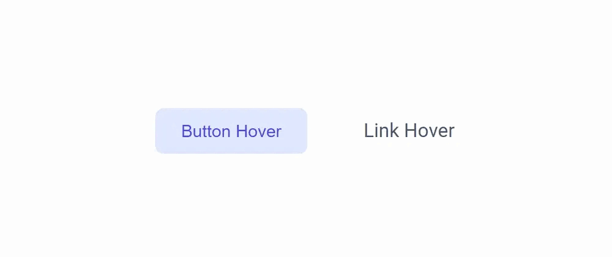

Las hojas de estilo asocian características de estilo a los elementos basándose en las etiquetas de los elementos y en su posición relativa (en el árbol del documento). Las pseudo-clases y los pseudo-elementos permiten hacer referencia a determinados elementos sin basarse en la información contenida en el árbol del documento.
La diferencia entre pseudo-clases y pseudo-elementos es sutil. En general, los pseudo-elementos suelen hacer referencia a determinadas partes de un elemento, mientras que las pseudo-clases suelen hacer referencia al estado del elemento.
Otra diferencia importante es que un pseudo-elemento sólo puede aparecer al final de un selector, mientras que una pseudo-clase puede aparecer en cualquier elemento del selector.
Las pseudo-clases permiten la selección de elementos, basada en información de estado que no está contenida en el árbol de documentos. Algunas de ellas son:

- :visited se aplicará a todos los elementos que hayan sido visitados por el usuario.
- :first-child hace referencia al primer elemento de un tipo contenido dentro de otro.
- :link permite especificar el aspecto de los enlaces que todavía no han sido visitados.
- :hover permite especificar el aspecto del elemento sobre el que se encuentra el ratón.
- :active permite especificar el aspecto de un elemento cuando se hace clic sobre él (y mientras se mantiene el botón del ratón apretado).
- :focus permite especificar el aspecto de un elemento cuando este tiene el foco.
- :lang() permite especificar el aspecto de los elementos de un idioma determinado.